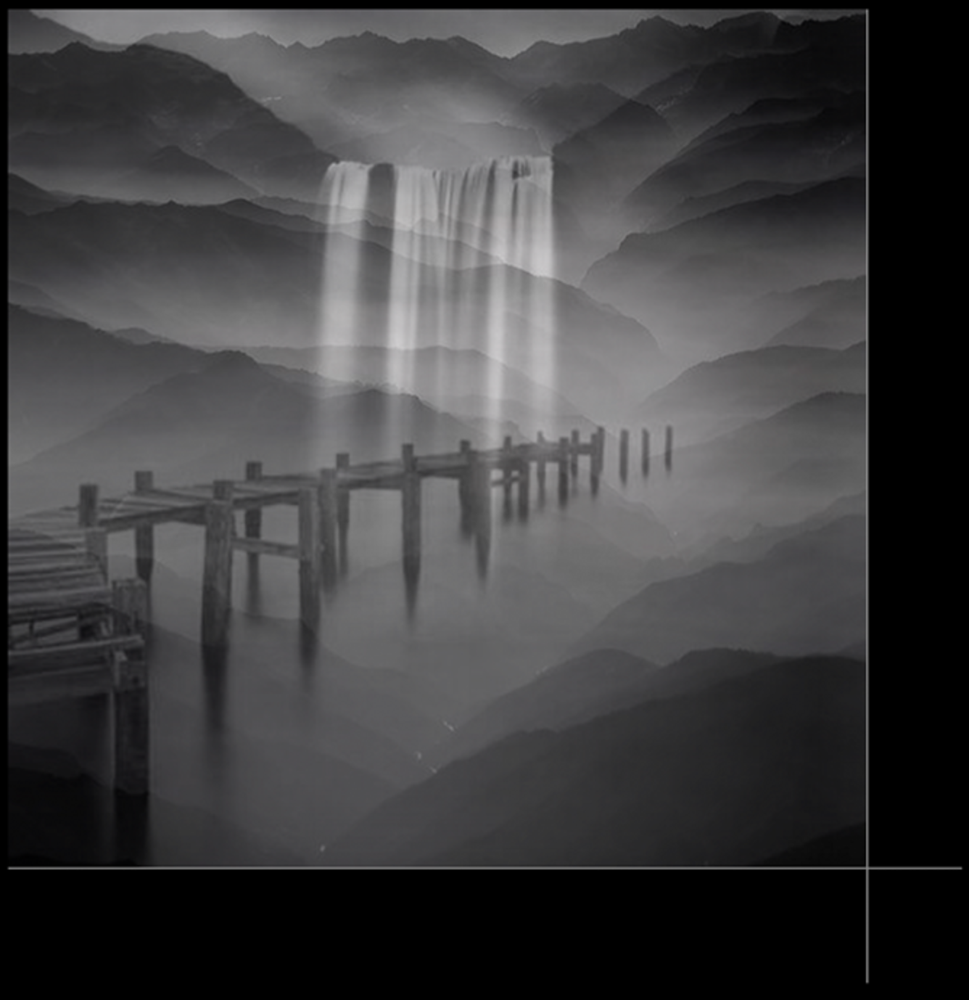
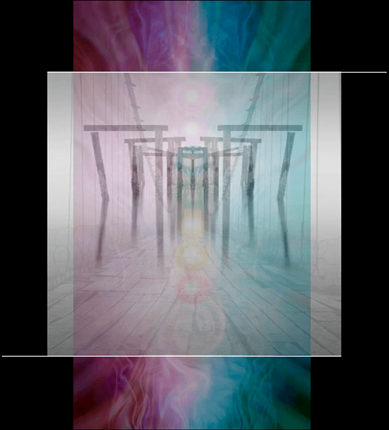

To face what is, makes sense past shattered dreams and broken hopes but not before,
as echoed in: “Not everything that is faced can be changed, but nothing can be changed
until it is faced.” To turn toward rather than away from and to look into rather than for a
way out of one’s given condition, makes for grace, grit and gratitude...
Personal as erotic desire, interpersonal as relationship and transpersonal as the
sounded breath of speech, to negate the primal from the psychedelic or the precious
from the present makes for pride, prejudice and possessiveness. Hence, in lieu of
integrity, empathy, agency and virtuosity, there is ideology, energy, anxiety and vanity
instead...
To face what is in the here and now over striving and seeking how shattered dreams
and broken hopes can be remedied and fixed, caused enthogenica to come about that
does the same as consciousness; the corpus, consonant and cosmos of phenomena...
The contrast that contrasts, consciousness cannot be had but only become aware of up
close and intimate by facing the given condition of being human: to evolve out from the
mirage of metaphorical unity...

The root cause of evolution, the primal is as arousing as desire, consummating as the erotic and as
interpersonal as relationship. The concomitant other of consciousness, the psychedelic is as
immeasurable as infinity, intangible as awareness and as transpersonal as listening. The breath of any
phenomenon, the precious is as empathic as com-passion, reflective as re-cognition and as personal as
response-ability…
Not re-, pro-, nor co-creational but as genuine as vulnerability, evolution rather than
power, profit and prestige drives becoming and being human. Interdependent rather
than performance-centered, to be human does not come about in a vacuum but
coexistence that links parts into wholes and wholes into organisms; from photon to
plankton and molecule to metamorphism...
The grow out and up from the performance-centered phantasm of romance, religion and reason and into
coexistence leads through the proverbial dark night of the soul; the deep and dreamless sleep state in
waking consciousness. Faced with the dissolution of any and all attachment, life and death are but the
identity rather than reality of memory, maternity and morality; me, my, mine, before anyone has moved
across the battlegrounds of gene, gender and godhead...

To catalyze the embracement of and surrender to desire, enthogenica utilizes psychoactive compounds. To
be given rather than taken, to make meaning of psychoactive compounds is just as illusionary as
understanding. The infinite remnants of impermanence, psychoactive compounds bring the blended and
blotted out to light. Thereby, desire is returned from exile up close and personal in the here and now.
Taken on one’s own, psychoactive compounds merely perpetuate the imago dei of “I, me, mine,” because
“only in relationship do you see the face of what is”...
Conducted in the comfort of one’s home or another suitable place of one’s choosing, Tetiana & Christoph
ground and guide enthogenica’s non-dual sessions that last anywhere from six to a maximum of eight
hours. The price per session is € 1200. An open mind and a vital body; no more or less is asked for
engaging with enthogenica. In the preliminary online meeting, any other questions can be directly
addressed. That said, be well rested and abstain from alcohol, meat and dairy on the day of the
encounter. Dress in lounge clothes without wearing any perfume or scented oils...
Conducive to anyone who is called to face and acknowledge what is over going for ceremony or settling
for complacency, falling for vanity or fishing for ecstasy, enthogenica’s non-dual encounters strike
mostly a cord with the mature, genuine, vulnerable and humble. The same holds true for the embracement
and surrender to desire...